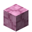

A dimensão embaixo do mundo: ilhas, minérios, criaturas, A Forja e o Leviatã.
Grama Cinzenta
Uma dimensão de ilhas flutuantes cinzentas embaixo do mundo. Só se entra pelo void do Overworld: quem cair e passar da camada -100 vai para lá (antes do dano do void normal, ninguém morre no caminho) (o void do Nether, do End e do próprio Vazio não leva). Ao chegar aparece o Pedestal do Retorno, inquebrável, com um portal que leva ao seu ponto de spawn. O céu é escuro e cheio de buracos negros, e lá é bem mais fácil achar Orbes de Mana.
| Bioma | Como é |
|---|
| Planícies do Vazio | Ilhas enormes e inteiras |
| Abismos do Vazio | As mesmas planícies cortadas por ravinas até o fundo |
| Ilhas do Vazio | Várias ilhas separadas |
| Planícies de Luz | Douradas e iluminadas: árvores e arbustos dourados, Gira-Sóis, mariposas brilhantes |
| Pântano Abissal | Lama, lagos de água roxa, árvores de mangue com vinhas, vitórias-régias e Lesmas Estelares |
No céu de todos os biomas do Vazio podem aparecer Ruínas Flutuantes: ilhotas de pedra com pilares quebrados, ligadas por correntes, com um baú de tesouros na do meio.
O ar do Vazio
| Situação | Dano |
|---|
| Sem proteção | 5 corações a cada 15 segundos (ignora armadura) |
| Bloco de Void na mão, 4 peças Elementais de Void ou 4 peças Abissais | Meio coração por minuto |
| Camadas -20 a -50 (Abismo Verdadeiro) | Dano pesado, Fraqueza e Escuridão; nada protege. Só a Âncora Abissal te puxa de volta |
| Abaixo da camada -50 | O buraco negro vermelho gigante te engole: morte, como no void normal |

Barra do Vazio
Feita na Fornalha Natural com um Fragmento do Vazio (120 segundos). Também cai do Leviatã. É material do Silent Gear.
Como obter
Fragmento do Vazio na Fornalha Natural (120s) ou drop do Leviatã.

Estrela do Vazio
No Nature Infuser: Estrela de Mana Despertada + Fragmento do Vazio. Depois da Despertada, cada Estrela do Vazio dá +1 na armadura de Manilium (até +15) ou na espada (até +150). Jogada no buraco da Toca do Abismo, chama o Leviatã.
Nature Infuser
em cima: entrada · embaixo: alimentação
Bancada da Forja
A Forja é uma estrutura rara do Vazio (no mínimo uns 2500 blocos uma da outra): muralha redonda de pedra negra com contrafortes de Pedra do Abismo, telhado cônico, a fornalha grande com chaminé, bigornas, altos-fornos e um baú com loot. No centro fica a Bancada da Forja (3x1), que ainda vai ser usada para forjar uma super espada.
Para gerar uma onde você está (operador): /magicblocks structure forge.
Ovo Gerador de Leviatã do Vazio
A Toca do Abismo é uma arena redonda do Vazio com um buraco muito fundo no meio. Jogue uma Estrela do Vazio no buraco: o Leviatã do Vazio, um dragão-serpente no estilo Rayquaza, sai em espiral e um pedestal com o Cristal do Vazio sobe no meio. Todos os ataques mostram antes onde vão acertar.
| Como funciona |
|---|
| Fase 1 | Barra de 5 pontos. Golpes não fazem nada: faça o laser dele acertar o cristal (o cristal devolve uma onda que tira 1 ponto). Com 3 pontos ele se enfurece e ataca 35% mais rápido. O laser vem a cada 4 ataques. |
| Transição | Ele destrói o cristal e empurra todo mundo para a beira. |
| Fase 2 | 1500 de vida. Ele fica enrolado no meio da arena e o buraco é tapado. |
| Ataque | Fase | Como é |
|---|
| Meteoros | 1 e 2 | Círculos vermelhos no chão |
| Buraco negro | 1 | Puxa a arena inteira e arranca pedras da borda |
| Metralhadora | 1 | Mini buracos negros saindo da cabeça |
| Laser | 1 | Carrega 5s; acertar o cristal é o objetivo |
| Mergulho | 1 e 2 | Sobe em cima de você e desce com uma onda de choque |
| Bote | 1 e 2 | Avança rápido e morde |
| Rugido | 1 e 2 | Empurra todo mundo e deixa lento |
| Investida | 2 | Corre na faixa vermelha, seguindo você até pouco antes |
| Laser varrendo | 2 | Sobe devagar de baixo para cima |
| Lasers do céu | 2 | Caem nos círculos roxos |
| Nova | 2 | Anéis de tiros para todos os lados |
O corpo inteiro pode ser acertado (50% do dano; a cabeça leva 100%). Magias, projéteis e explosões dão 50% a mais, e nenhum golpe passa de 100 de dano. Se a arena ficar vazia por 1 minuto ele volta para o buraco. Comandos de operador: /magicblocks structure den gera uma Toca e /magicblocks leviathan chama o Leviatã na Toca mais perto.

Escama de Leviatã
O Leviatã solta 12 a 28 Escamas, 2 a 8 Garras, o Coração do Leviatã (um bloquinho rosa que pulsa e brilha), Cristais Abissais, sucata de netherita, 1 Orbe de Mana, Essência do Void e Barras do Vazio. As escamas fazem a Armadura de Leviatã e as garras, a Espada da Besta.


Uma Garra no Nature Infuser com a Espada de Manilium deixa a espada "duas mãos": na segunda mão, o botão direito bate como na principal.
Ovo Gerador de Colosso Fraturado
O Colosso Fraturado é um mini-chefe raro das Planícies e do Pântano Abissal: um golem de pedra abissal rachado, com cristais roxos brilhando nas fendas. Todo ataque é avisado antes.
| Ataque | Como é |
|---|
| Pancada | Ergue os braços e um círculo vermelho aparece no chão onde vai cair (1,5s). Quem estiver dentro leva 15 de dano e voa |
| Lança de Cristal | Uma linha vermelha mostra o caminho (1,25s) e um feixe de cristal corta a linha (11 de dano) |
| Erupção de Cristais | 5 círculos roxos aparecem em volta de você (1,5s) e espinhos de cristal sobem de cada um (10 de dano) |
| Investida | Uma faixa vermelha no chão mostra o caminho (1,25s) e ele corre por ela atropelando quem estiver na frente (14 de dano) |
| Fratura | Com 2/3 e 1/3 da vida ele se parte e solta 2 Fragmentos (pequenos, só dão a pancada) |
Solta o Núcleo Fraturado, 2 a 5 Cristais Abissais e 1 a 3 Essências do Void (nunca Barra do Vazio nem Orbe de Mana). O núcleo faz o Martelo Fraturado: a cada 1,5s o golpe faz um tremor que joga os monstros em volta para cima.